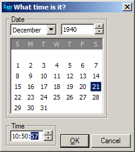
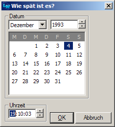
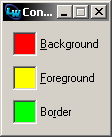
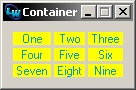
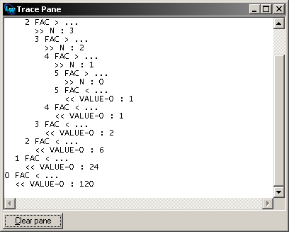

Abstract
MIDGETS is a collection of re-usable CAPI widgets and utilities I wrote for various projects.The code has been developed and used with LispWorks 4.4.6 and 5.0.2 for Windows, but it should work on Linux and OS X as well.
It comes with a BSD-style license so you can basically do with it whatever you want.
|  |  |
MIDGETS comes with a system definition
for ASDF and with one for
LispWorks' Common
Defsystem.
CAPI:PROMPT-FOR-COLOR
so that the user can change the color. They can be queried for the
color they currently have, the color can be changed non-interactively,
and they provide callbacks which are called when the color has
changed. There are also color button
panels which group several color buttons together.
Here's an example:
CL-USER 1 > (capi:contain
(make-instance 'midgets:color-button-panel
:items '(:background :foreground :border)
:title-function 'string-capitalize
:button-args '(:title-position :right)
:layout-class 'capi:column-layout
:layout-args '(:adjust :left :internal-border 10 :gap 10)
:callback (lambda (item color)
(capi:display-message "You selected ~S as the new color for ~S."
color item))))
#<MIDGETS:COLOR-BUTTON-PANEL 21F2389B>
[Standard class]
color-button
This class is the user-visible implementation of a single color button. Technically, it's currently implemented as a simple pinboard layout wrapped around a drawn pinboard object, but that might change. You should treat it like a simple pane and only use the documented initargs, readers, and writers.The initargs for this class are
:COLOR,:CALLBACK,:ITEM,:WIDTH,:HEIGHT,:TITLE(and the other initargs for a titled object),:PROMPT-TEXT,:PROMPT-ARGS, and:VISIBLE-BORDERas well as the standard initargs:HELP-KEY,:NAME, and:PLIST. You should refrain from using other initargs like for example layout constraints unless you know exactly what you're doing.
coloris the initial color of the button.callback, if notNIL, is a function of one argument which is called with the new color when the color has changed.prompt-textandprompt-argsare arguments for theCAPI:PROMPT-FOR-COLORfunction.widthandheightdetermine the fixed width and height of the button.itemis an arbitrary Lisp object associated with the button which is only really useful for color button panels. The semantics of the other initargs are as usual in CAPI.
[Accessors]
color-button-callback color-button => callback
(setf (color-button-callback color-button) new-callback)
color-button-color color-button => color
(setf (color-button-color color-button) new-color)
color-button-prompt-args color-button => prompt-args
(setf (color-button-prompt-args color-button) new-prompt-args)
color-button-prompt-text color-button => prompt-text
(setf (color-button-prompt-text color-button) new-prompt-text)
These accessors can be used to get and set the values of the corresponding slots of the color buttoncolor-button. Note that changing the color will result in the graphical representation being updated and the callback being called (if there is one).
[Standard class]
color-button-panel
The class which implements color button panels, a number of color buttons layed out together with a group behaviour.Technically, this is a simple layout, but you should for all practical purposes just treat it like a simple pane and only use the documented initargs, readers, and writers.
The initargs for this class are
:ITEMS,:CALLBACK,:COLOR-FUNCTION,:TITLE-FUNCTION,:BUTTON-ARGS,:BUTTON-ARGS-FUNCTION,:LAYOUT-CLASS,:LAYOUT-ARGS,:TEST-FUNCTION,:HELP-KEYS, and:BUTTONSas well as the standard initargs:HELP-KEY,:NAME, and:PLIST.
itemsis a list of arbitrary Lisp objects representing the buttons.color-functionshould be a function of one argument which will be called for each item and should return its button's initial color. Likewise,title-functionis supposed to provide a title for each item (i.e. button).
button-argsis a property list with additional initargs for the buttons that are going to be created. Or, if you want more fine-grained control, you can usebutton-args-functionto provide different initargs per item.
help-keys, if provided, should be a list of help keys in one-to-one correspondence with the listitems.
callbackshould be a function of two arguments which will be called with the item and the new color whenever the color of a button changes.You can also simply provide a list
buttonsof color buttons. In this case, all the initargs mentioned above will be ignored.
test-function(the default isEQL) is the function used to test two items for equality.
layout-classandlayout-argsdetermine how the button panel will be layed out. This works like with CAPI's stock button panels.
[Reader]
color-button-panel-buttons color-button-panel => color-button-list
Returns a list of the color buttons which comprise the color button panelcolor-button-panel.
[Accessor]
color-button-panel-item-color color-button-panel item => color
(setf (color-button-panel-item-color color-button-panel item) new-color)
Gets or sets the color of the button from the color button panelcolor-button-panelthat's associated with the itemitem. Will returnNILor do nothing if no such button can be found.
[Method]
color-button-panel-items color-button-panel => list-of-items
Returns the list of items associated with the buttons in the color button panelcolor-button-panel.
[Reader]
color-button-panel-test-function color-button-panel => test-function
Returns the test function of the color button panelcolor-button-panel.
Here's an example:
CL-USER 1 > (capi:contain
(make-instance 'midgets:flat-button-panel
:items (loop for i from 1 to 9 collect i)
:print-function (lambda (item)
(format nil "~:(~R~)" item))
:button-args '(:foreground :dark-blue :background :yellow)
:layout-class 'capi:grid-layout
:layout-args '(:columns 3 :internal-border 10 :visible-max-width t)
:callback-type :data
:callback (lambda (item)
(capi:display-message "You selected number ~D." item))))
#<MIDGETS:FLAT-BUTTON-PANEL 200C2E63>
[Standard class]
flat-button
This class is the user-visible implementation of a single flat button. Technically, it's currently implemented as a simple pinboard layout eventually wrapped around an item pinboard object, but that might change. You should treat it like a simple pane and only use the documented initargs, readers, and writers.The initargs for this class are
:CALLBACK,:CALLBACK-TYPE,:BACKGROUND,:FOREGROUND,:TEXT(and the other initargs for an item),:VISIBLE-BORDER, layout constraints like:VISIBLE-MIN-WIDTHas well as the standard initargs:HELP-KEY,:NAME, and:PLIST. You should refrain from using other initargs unless you know exactly what you're doing.
callback, if notNIL, is a function which is called when the button is clicked.callback-typedetermines how the callback is called and can have values as for the class CAPI:CALLBACKS.backgroundandforegroundare the color of the button and the color of the text on the button respectively. The semantics of the other initargs are as usual in CAPI.
[Reader]
flat-button-item flat-button => item
Returns the item associated with the flat buttonflat-button.
[Accessors]
flat-button-callback flat-button => callback
(setf (flat-button-callback flat-button) new-callback)
flat-button-callback-type callback-type => result
(setf (flat-button-callback-type flat-button) new-callback-type)
These accessors can be used to get and set the values of the corresponding slots of the flat buttonflat-button.
[Standard class]
flat-button-panel
The class which implements flat button panels, a number of flat buttons layed out together with a group behaviour.Technically, this is a simple layout, but you should for all practical purposes just treat it like a simple pane and only use the documented initargs, readers, and writers.
The initargs for this class are
:ITEMS,:CALLBACK,:CALLBACK-TYPE,:PRINT-FUNCTION,:BUTTON-ARGS,:BUTTON-ARGS-FUNCTION,:LAYOUT-CLASS,:LAYOUT-ARGS,:TEST-FUNCTION, and:BUTTONS, as well as the standard initargs:HELP-KEY,:NAME, and:PLIST.
itemsis a list of arbitrary Lisp objects representing the buttons.print-functionshould be a function of one argument which will be called for each item and should return its button's text.
button-argsis a property list with additional initargs for the buttons that are going to be created. Or, if you want more fine-grained control, you can usebutton-args-functionto provide different initargs per item.
help-keys, if provided, should be a list of help keys in one-to-one correspondence with the listitems.
callback, if notNIL, is a function which is called when one of the buttons is clicked.callback-typedetermines how the callback is called and can have values as for the class CAPI:CALLBACKS.You can also simply provide a list
buttonsof flat buttons. In this case, all the initargs mentioned above will be ignored.
test-function(the default isEQL) is the function used to test two items for equality.
layout-classandlayout-argsdetermine how the button panel will be layed out. This works like with CAPI's stock button panels.
[Reader]
flat-button-panel-buttons flat-button-panel => flat-button-list
Returns a list of the flat buttons which comprise the flat button panelflat-button-panel.
[Method]
flat-button-panel-items flat-button-panel => list-of-items
Returns the list of items associated with the buttons in the flat button panelflat-button-panel.
[Reader]
flat-button-panel-test-function flat-button-panel => test-function
Returns the test function of the flat button panelflat-button-panel.
PROMPT-FOR-DATE that
you can use to ask users for dates, times, or both. And it also
exposes the
interfaces which were defined to implement this functions so that you
can intergrate them into your own GUI design.
[Function]
prompt-for-date message &key time day month year callback ok-text cancel-text => new-time
Displays a date interface with the titlemessageprompting the user for a date. The date entered by the user is returned as a universal time with seconds, minutes, and hours set to zero. The date interface is initialized with the valuesday,month,year, or with the universal timetimewhich takes precedence over the other three values. The default is to use the current date.
ok-textis the text on the button which confirms the user input,cancel-textis the text on the button which cancels. The defaults are"OK"and"Cancel". If the users presses the cancel button, the function returnsNIL.If
callbackis notNIL(which is the default), it is supposed to be a function of one argument (the date interface) which is called whenever the user changes the date. Note that the callback might be called more than once for each change or even if nothing hasn't changed.
[Function]
prompt-for-time message &key time second minute hour callback ok-text cancel-text => new-time
Displays a time interface with the titlemessageprompting the user for a time. The time entered by the user is returned as a universal time with day, month, and year set to 1900-01-01. The time interface is initialized with the valuessecond,minute,hour, or with the universal timetimewhich takes precedence over the other three values. The default is to use the current time.
ok-textis the text on the button which confirms the user input,cancel-textis the text on the button which cancels. The defaults are"OK"and"Cancel". If the users presses the cancel button, the function returnsNIL.If
callbackis notNIL(which is the default), it is supposed to be a function of one argument (the time interface) which is called whenever the user changes the date. Note that the callback might be called more than once for each change or even if nothing hasn't changed.
Displays a date interface and a time interface with the titlemessageprompting the user for date and time. The date and time entered by the user are returned as a universal time. The interfaces are initialized with the valuessecond,minute,hour,day,month, andyear, or with the universal timetimewhich takes precedence over the other six values. The default is to use the current date and time.
date-titleis the title for the date interface,time-titleis the title for the time interface. The defaults are"Date"and"Time".ok-textis the text on the button which confirms the user input,cancel-textis the text on the button which cancels. The defaults are"OK"and"Cancel". If the users presses the cancel button, the function returnsNIL.If
callbackis notNIL(which is the default), it is supposed to be a function of one argument (the date interface or the time interface) which is called whenever the user changes the date or the time. The callback must be able to distinguish between the date interface and the time interface. Note that the callback might be called more than once for each change or even if nothing hasn't changed.
[Standard class]
date-interface
This is a direct subclass ofCAPI:INTERFACE. Instances of this class are used for thePROMPT-FOR-DATEfunction, but you can also use them independently. The relevant initargs are:DAY,:MONTH,:YEAR, and:CALLBACK, and they are used as inPROMPT-FOR-DATE.
[Accessors]
date-interface-callback date-interface => callback
(setf (date-interface-callback date-interface) callback)
date-interface-day date-interface => day
(setf (date-interface-day date-interface) day)
date-interface-month date-interface => month
(setf (date-interface-month date-interface) month)
date-interface-year date-interface => year
(setf (date-interface-year date-interface) year)
These accessors can be used to get and set the values of the corresponding slots of the date interfacedate-interface. Note that changing the day, month, or year will result in the graphical representation being updated and the callback being called (if there is one).
[Accessor]
date-interface-time date-interface => time
(setf (date-interface-time date-interface) time)
This accessor can be used to get and set the date represented by the date interfacedate-interfaceas a universal time. This is in a way equivalent to usingDATE-INTERFACE-DAY,DATE-INTERFACE-MONTH, andDATE-INTERFACE-YEARall at once. If used as a reader, the hours, minutes, and seconds oftimeare ignored. If used as a writer, the hours, minutes, and seconds returned are set to zero.
[Standard class]
time-interface
This is a direct subclass ofCAPI:INTERFACE. Instances of this class are used for thePROMPT-FOR-TIMEfunction, but you can also use them independently. The relevant initargs are:SECOND,:MINUTE,:HOUR, and:CALLBACK, and they are used as inPROMPT-FOR-TIME.
[Accessors]
time-interface-callback time-interface => callback
(setf (time-interface-callback time-interface) callback)
time-interface-second time-interface => second
(setf (time-interface-second time-interface) second)
time-interface-minute time-interface => minute
(setf (time-interface-minute time-interface) minute)
time-interface-hour time-interface => hour
(setf (time-interface-hour time-interface) hour)
These accessors can be used to get and set the values of the corresponding slots of the time interfacetime-interface. Note that changing the second, minute, or hour will result in the graphical representation being updated and the callback being called (if there is one).
[Accessor]
time-interface-time time-interface => time
(setf (time-interface-time time-interface) time)
This accessor can be used to get and set the time represented by the time interfacetime-interfaceas a universal time. This is in a way equivalent to usingTIME-INTERFACE-SECOND,TIME-INTERFACE-MINUTE, andTIME-INTERFACE-HOURall at once. If used as a reader, the day, month, and year oftimeare ignored. If used as a writer, the day, month, and year returned are 1900-01-01.
[Special variable]
*use-win32-locale-info*
This variable (which is only available on Windows) controls whether locale info provided by Windows should be used for weekday names, month names, and the beginning of the week. (See below.)
[Special variable]
*default-first-day-of-week*
Default value for the day the week starts with. 0 is Monday, 1 is Tuesday, and so on. The initial value is 6 (for Sunday). On Windows, locale-specific values will be used instead if*USE-WIN32-LOCALE-INFO*is true.
[Special variable]
*default-month-names*
Default values for the month names - a list of strings. The initial value is a list of the English month names. On Windows, locale-specific values will be used instead if*USE-WIN32-LOCALE-INFO*is true.
[Special variable]
*default-weekday-names*
Default values for the names of the weekdays - a list of strings starting with the name for Monday. The initial value is a list of the English weekday names. On Windows, locale-specific values will be used instead if*USE-WIN32-LOCALE-INFO*is true.
[Special variable]
*use-win32-color-info*
This variable (which is only available on Windows) controls whether theme-specific info provided by Windows should be used for text and background colors. (See below.)
[Special variable]
*inactive-caption-color*
Default value for the background color of inactive caption text. The initial value is:GREY40. On Windows, the theme-specific value will be used instead if*USE-WIN32-COLOR-INFO*is true.
[Special variable]
*inactive-caption-text-color*
Default value for the color of inactive caption text. The initial value is:GREY70. On Windows, the theme-specific value will be used instead if*USE-WIN32-COLOR-INFO*is true.
[Special variable]
*highlight-color*
Default value for the background color of highlighted text. The initial value is:MIDNIGHTBLUE. On Windows, the theme-specific value will be used instead if*USE-WIN32-COLOR-INFO*is true.
[Special variable]
*highlight-text-color*
Default value for the color of highlighted text. The initial value is:WHITE. On Windows, the theme-specific value will be used instead if*USE-WIN32-COLOR-INFO*is true.
[Special variable]
*window-color*
Default value for the background color of standard windows. The initial value is:WHITE. On Windows, the theme-specific value will be used instead if*USE-WIN32-COLOR-INFO*is true.
[Special variable]
*window-text-color*
Default value for the standard color of text. The initial value is:BLACK. On Windows, the theme-specific value will be used instead if*USE-WIN32-COLOR-INFO*is true.
Here's an example:
CL-USER 1 > (defun fac (n)
(if (zerop n) 1 (* n (fac (1- n)))))
FAC
CL-USER 2 > (compile *)
FAC
NIL
NIL
CL-USER 3 > (capi:define-interface trace-interface ()
()
(:panes
(trace-pane
midgets:collecting-display-pane
:accessor trace-pane
:font (gp:make-font-description :family "Lucida Console" :size 9)
:force-output-p :newline
:auto-scroll-p t)
(clear-button
capi:push-button
:text "Clear pane"
:callback-type :none
:selection-callback (lambda ()
(setf (capi:display-pane-text trace-pane) ""))))
(:default-initargs
:title "Trace Pane"
:best-width 400
:best-height 300))
TRACE-INTERFACE
CL-USER 4 > (defparameter *trace-interface* (capi:display (make-instance 'trace-interface)))
*TRACE-INTERFACE*
CL-USER 5 > (trace fac)
(FAC)
CL-USER 6 > (let ((*trace-output* (midgets:collecting-display-pane-stream (trace-pane *trace-interface*))))
(fac 5))
120
[Standard class]
collecting-display-pane
A display pane which has a stream associated with it that writes to the pane, i.e. whenever you send output to the stream it ends up in the display pane. Collecting display panes inherit fromCAPI:DISPLAY-PANEand are thus used like those and accept the same initargs although some defaults are different. (Use the Class Browser for details.) The only additional initargs they accept are:FORCE-OUTPUT-Pand:AUTO-SCROLL-P. Follow the links for more information about these two.
[Accessor]
collecting-display-pane-auto-scroll-p collecting-display-pane => auto-scroll-p
(setf (collecting-display-pane-auto-scroll-p collecting-display-pane) new-auto-scroll-p)
With this accessor (or the:AUTO-SCROLL-Pinitarg toCOLLECTING-DISPLAY-PANE) you can ask the pane's stream to automatically scroll down to the end of the pane whenever its buffer was flushed. Of course, this makes only sense if vertical scrolling is enabled for the pane (which is the default).
[Reader]
collecting-display-pane-lock collecting-display-pane => lock
Returns the lock which is internally used to synchronize primitive stream operations. You can use it yourself to wrap it around higher-order output functions likeFORMAT.
[Reader]
collecting-display-pane-stream collecting-display-pane => stream
The stream (of typeDISPLAY-PANE-STREAM) that's associated withcollecting-display-pane, i.e. the stream the sink of which is the display pane. Note that you can write to this stream from any thread. The underlying implementation will make sure that the correct thread is used.
[Standard class]
display-pane-stream
The stream class used by collecting display panes, i.e. streams of this class are character output streams which write their output to a CAPI display pane. The streams are implemented on top ofSTREAM:BUFFERED-STREAMand hold a reference to the pane they write to. You should not instantiate objects of this class yourself unless you know what you're doing.
[Accessor]
display-pane-stream-force-output-p display-pane-stream => force-output-p
(setf (display-pane-stream-force-output-p display-pane-stream) new-force-output-p)
As display pane streams are buffered streams, their output will usually not be immediately shown but only after you've called FORCE-OUPUT or FINISH-OUPUT to flush the buffer.With this accessor (or the
:FORCE-OUTPUT-Pinitarg toCOLLECTING-DISPLAY-PANE) you can ask the stream to automatically callFORCE-OUTPUTfor you in certain situations - either after each character if the value isTor after each#\Newlineif the value is:NEWLINE. If the value isNIL(which is the default) or any other value,FORCE-OUTPUTwill not be called automatically.
[Reader]
display-pane-stream-lock display-pane-stream => lock
This is just a "trampoline" accessor from the stream to its associated pane to access at the lock they share.
[Reader]
display-pane-stream-pane display-pane-stream => collecting-display-pane
A reader to access the collecting display pane the stream writes to.
However, you still have to do some of the work yourself. Something like the following:
CAPI:TOP-LEVEL-INTERFACE-SAVE-GEOMETRY-P and
CAPI:TOP-LEVEL-INTERFACE-GEOMETRY-KEY
as you would do for a non-dialog interface.
CACHE-INTERFACE-GEOMETRY is called whenever your
dialog is destroyed. The easiest way is to make this function
the destroy
callback of your interface.
(lw:defadvice (capi:display-dialog use-geometry-cache :around)
(interface &rest args)
(apply #'lw:call-next-advice interface
;; use the X and Y position from the last time the dialog was shown
(append (lw:when-let (geometry (midgets:get-interface-geometry interface (getf args :screen)))
`(:position-relative-to nil :x ,(first geometry) :y ,(second geometry)))
args)))
CLEAR-INTERFACE-GEOMETRY-CACHE before
you deliver
an application or on application startup.
[Function]
clear-interface-geometry-cache => |
Clears the internal geometry cache. This function should for example be called before an image is delivered.
[Generic function]
get-interface-geometry interface &optional screen => geometry
Returns the cached or saved geometry for the CAPI interfaceinterfaceand the screenscreen. It first tries to find it in the internal cache of the MIDGETS library and, failing that, tries to look it up usingLW:USER-PREFERENCE. The returned geometry is a list of four elements - the absolute x and y coordinates of the interface and its width and height.This will only work for interfaces which are declared as interfaces that should be saved in the usual way.
[Generic function]
cache-interface-geometry interface => geometry
Saves the geometry for the CAPI interfaceinterfacein the internal cache of the MIDGETS library.This will only work for interfaces which are declared as interfaces that should be saved in the usual way.
Note that only one geometry per interface is currently cached. There's no support for different screens or resolutions.
*default-first-day-of-week*
*default-month-names*
*default-weekday-names*
*highlight-color*
*highlight-text-color*
*inactive-caption-color*
*inactive-caption-text-color*
*use-win32-color-info*
*use-win32-locale-info*
*window-color*
*window-text-color*
cache-interface-geometry
clear-interface-geometry
collecting-display-pane
collecting-display-pane-auto-scroll-p
collecting-display-pane-lock
collecting-display-pane-stream
color-button
color-button-callback
color-button-color
color-button-panel
color-button-panel-buttons
color-button-panel-item-color
color-button-panel-items
color-button-panel-test-function
color-button-prompt-args
color-button-prompt-text
date-interface
date-interface-callback
date-interface-day
date-interface-month
date-interface-time
date-interface-year
display-pane-stream
display-pane-stream-force-output-p
display-pane-stream-lock
display-pane-stream-pane
flat-button
flat-button-callback
flat-button-callback-type
flat-button-item
flat-button-panel
flat-button-panel-buttons
flat-button-panel-items
flat-button-panel-test-function
get-interface-geometry
prompt-for-date
prompt-for-date-and-time
prompt-for-time
time-interface
time-interface-callback
time-interface-hour
time-interface-minute
time-interface-second
time-interface-time
This documentation was prepared with DOCUMENTATION-TEMPLATE.
$Header: /usr/local/cvsrep/midgets/doc/index.html,v 1.29 2015/08/23 14:48:44 edi Exp $